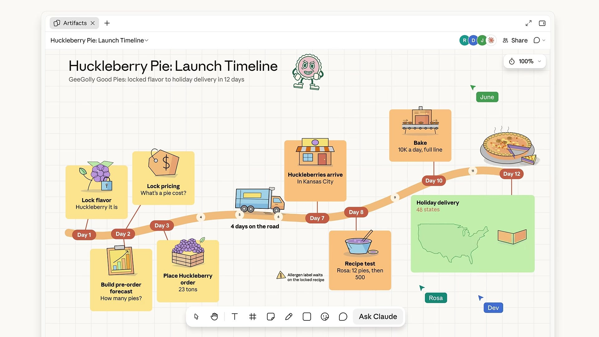
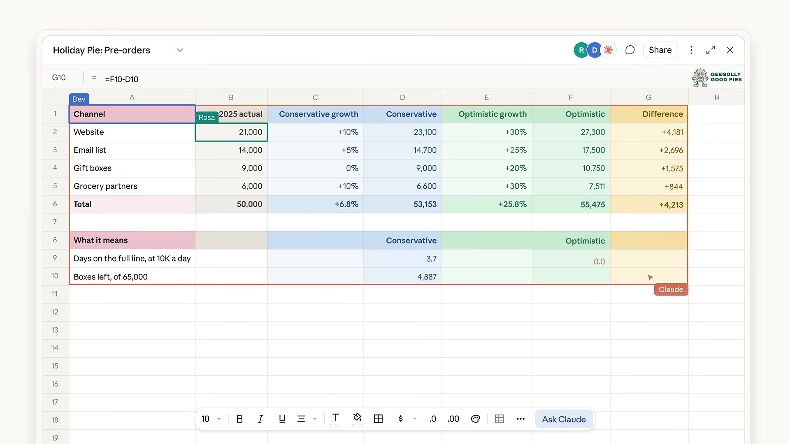
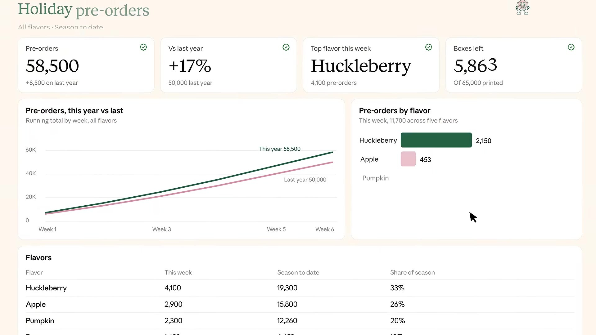
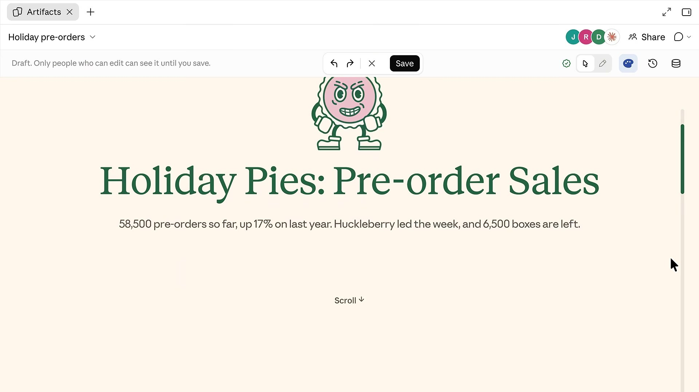
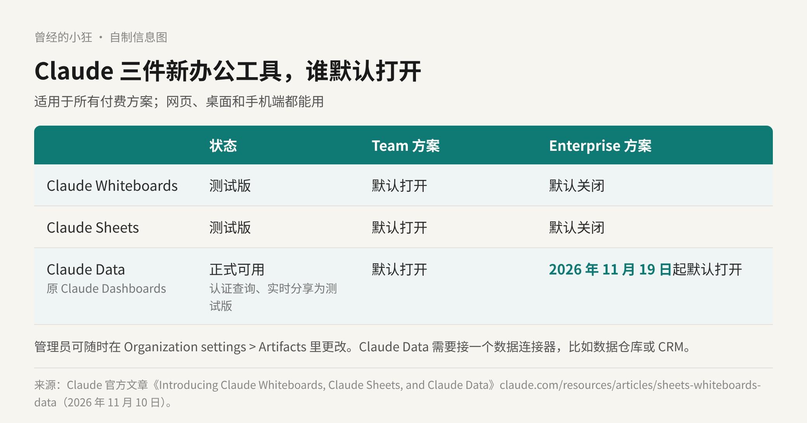

用 Claude 干活，最后一步往往是复制粘贴。头脑风暴的结果抄进白板软件，算好的预算贴进表格，查出来的数字再搬进看板。东西一挪走，Claude 就看不到后面的进展和改动了，下次再问，还得从头讲一遍。
11 月 10 日，Anthropic 想把这一步省掉。它推出了 Claude Whiteboards 和 Claude Sheets，两个都是测试版；10 月以测试版上线的 Claude Dashboards 转为正式可用，并改名叫 Claude Data。三样东西所有付费方案都能用，网页、桌面和手机端都有。
官方的说法很直接：现在你的文档、白板、表格和看板都可以留在 Claude 里，团队可以接着一起改。要用到更专业的工具时，再把结果带进合作方的产品里。
很多人拿 Claude 当思考搭档，可聊出来的东西得复制到别处，才能拉同事一起接着想。Whiteboards 要解决的就是这件事。
你可以把一个乱糟糟的计划口头讲给 Claude，它会把它整理成一张白板，上面有时间线、负责人和日期，团队可以实时一起改。官方举的例子是复盘会：每个人往板上贴自己的便签，Claude 按主题归组，再给每个人起草行动项。

官方介绍视频截帧：Whiteboards 里的一张产品发布时间线，带负责人、日期和便签。画面中的品牌与数据为官方演示内容。图片来源：Anthropic 官方视频《Introducing Claude Whiteboards, Sheets, and Data》
还有一个小设计挺顺手：在板上拖一个框，圈住其中一块，就可以只针对这一块问 Claude。聊完以后，Claude 能把整张板转成文档或演示稿，也可以带进 Lucid、Miro 或 Vani by Zoho，在那边接着跟团队干。
Sheets 是 Claude 和你一起搭、一起改的电子表格。往往一句话就够，比如「做一个活动进度表」「做一份招聘预算」，Claude 就能生成带标签页、公式、格式和下拉菜单的表格。
它直接在单元格里改，每一处新改动都会框出来，方便你追踪改了什么。表格可以分享给团队，你和 Claude 在同一张表上协作。

官方介绍视频截帧：Sheets 里按渠道拆分的预售预测表，Claude 修改过的区域会框出来。画面中的品牌与数据为官方演示内容。图片来源：Anthropic 官方视频《Introducing Claude Whiteboards, Sheets, and Data》
官方也没把话说满：Sheets 眼下只有简单的电子表格功能，还在继续加。真要用到 Excel 的全套本事，可以导出成 .xlsx 或 CSV，或者改用 Claude for Excel；也可以带进 Airtable、Asana、monday.com 和 Smartsheet 接着做。
Claude Dashboards 是 10 月以测试版上线的，让团队能直接对 Amazon Redshift、BigQuery、ClickHouse 这类数据源里的公司数据提问。这次它转为正式可用，改名 Claude Data。官方给的改名理由是，公司用数据的方式比「看板」宽得多，产品现在覆盖的也更多。
新加的东西里，有两样还是测试版：认证查询和实时分享。整体来看，Claude Data 现在能做这些事：
认证指标。数据团队可以把「大家都该用的那条查询」认证下来，免得各人搭出来的看板数字对不上。基于这些指标做的图表会带一个「certified」标记。
用数据讲故事。可以和 Claude 一起，把指标写成数据故事，或者做成带讲解的视频，你审过再分享。
把当前数字分享给所有人。开了实时分享，同事打开你分享的看板就能看到最新数字，哪怕他们没有那些数据连接器的权限。他们看到的是你批准过的那些查询的结果，没法借你的权限去跑别的查询。
另外还有三样：支持套用自家的设计系统，看板加了缓存、可以按看板单独设刷新频率，还有修订记录，能看到谁改过、回退到某个版本。合作方包括 Amplitude、Mixpanel、Omni、PostHog 和 Sigma。

官方介绍视频截帧：Claude Data 里的一块预售看板，顶部是关键数字，下面是趋势和分品类图表。画面中的品牌与数据为官方演示内容。图片来源：Anthropic 官方视频《Introducing Claude Whiteboards, Sheets, and Data》

官方介绍视频截帧：同一份数据被做成一篇可以往下滚的数据故事。画面中的品牌与数据为官方演示内容。图片来源：Anthropic 官方视频《Introducing Claude Whiteboards, Sheets, and Data》
我觉得实时分享是这三样里最实用的一项。公司里最常见的场景就是：会看数的人有权限，要看数的人没权限，于是只能截图、导出、发群。能把「看结果」和「有权限跑查询」拆开，这件事本身就省了很多来回。
Team 方案上，三样默认都打开。
Enterprise 方案上，Whiteboards 和 Sheets 默认关闭；Claude Data 则会在 2026 年 11 月 19 日起默认打开。
管理员随时可以在 Organization settings > Artifacts 里改。另外，Claude Data 要先接一个数据连接器，比如数据仓库或 CRM，不然没有数可看。

自制信息图：三件工具的状态，以及 Team、Enterprise 方案上的默认开关。数据来自 Claude 官方文章。
同一天还有一项相关更新：交互式连接器现在可以在对话旁边或者全屏，以完整应用的形式打开，Adobe、Atlassian、Box、Notion 这些工具，你可以自己动手改，也可以让 Claude 跟你一起改。
把这几样放在一起看，Anthropic 的思路挺清楚：不只是帮你想、帮你写，还要让产出留在 Claude 里，让 Claude 一直看得到它的后续变化。白板记住你们讨论到哪了，表格记住谁改了哪一格，看板记住数字今天是多少。
这对团队是实打实的方便，少了很多「复制过去、再贴回来」。但它也意味着，团队里又多了一个放东西的地方。好在官方没把门关上：白板能带去 Miro，表格能导出 xlsx，看板背后还是你自己的数据仓库。
我的建议是，Team 用户可以先从白板和表格这种轻量的活试起，比如开一次复盘会、搭一张预算表；Enterprise 的管理员则要在 11 月 19 日之前想好，Claude Data 默认打开以后，哪些数据连接器、哪些查询该先认证下来。
过去我们问 Claude 要一个答案。往后，可能更像是请它进来，一起守着一份会变的东西。
来源清单：
https://claude.com/resources/articles/sheets-whiteboards-data
https://www.youtube.com/watch?v=YewAJPawE7I